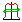
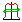

Maximum Dose Ratio¶
the maximum dose ratio symmetry (also called the point difference quotient) is the maximum ratio between the left and right profile values at the same distance from the profile or detector centre:
\[100 \cdot maximum \left [\cfrac {P(dL)} {P(dR)} , \cfrac {P(dR)} {P(dL)} \right ]\]
for dR = -dL from 0 to 80% of the field size
 The ratio symmetry is affected by the field centre. If the field is slightly offset you can use the “Centre field” tool  to correct any offset.
The ratio symmetry is affected by the field centre. If the field is slightly offset you can use the “Centre field” tool  to correct any offset.